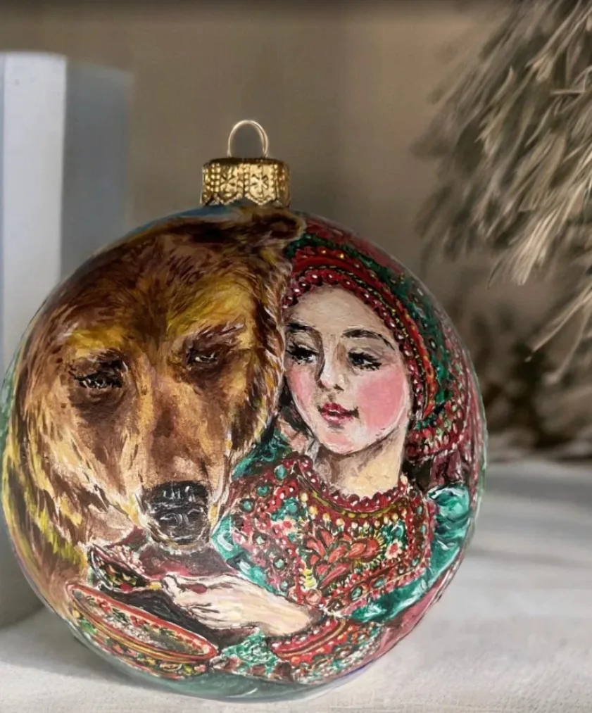

Авторская роспись ёлочных игрушек
Игрушка, которую не захочется убирать в коробку
Расписываю чистые формы и переписываю фабричные — бывало, Будда становился купчихой за чаем, а ангел — Фридой Кало
Людмила Семенова
художник, авторская роспись ёлочных игрушек
- 15 летрасписываю ёлочные игрушки
- 100+расписанных игрушек
- 3 страныгде живут мои игрушки